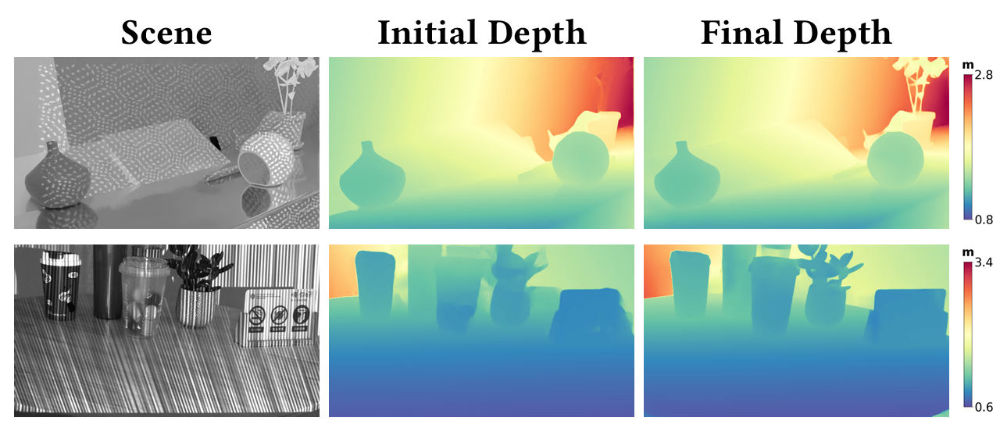
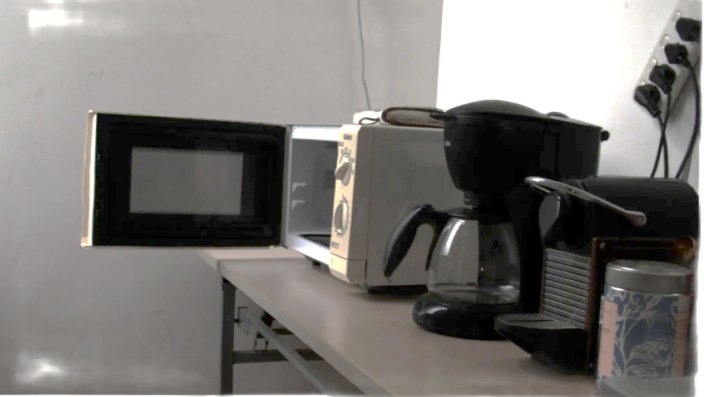
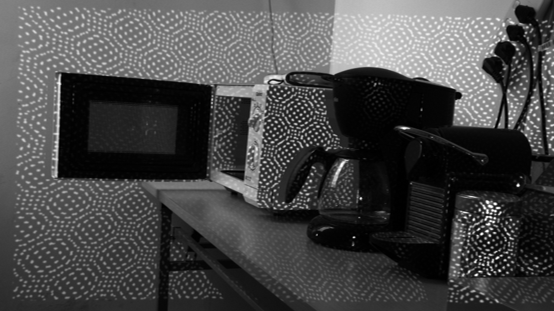
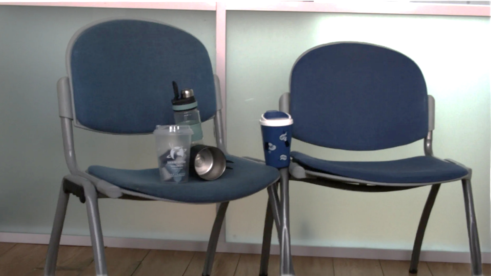
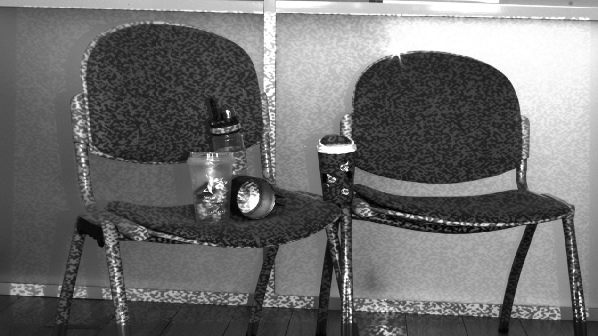
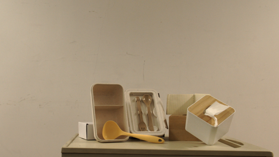
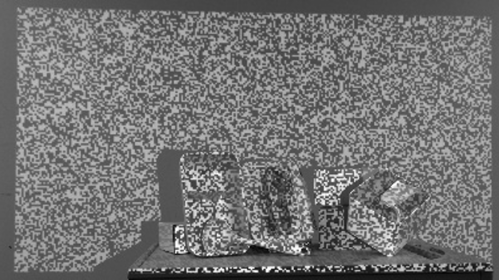
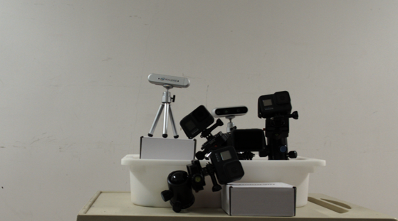
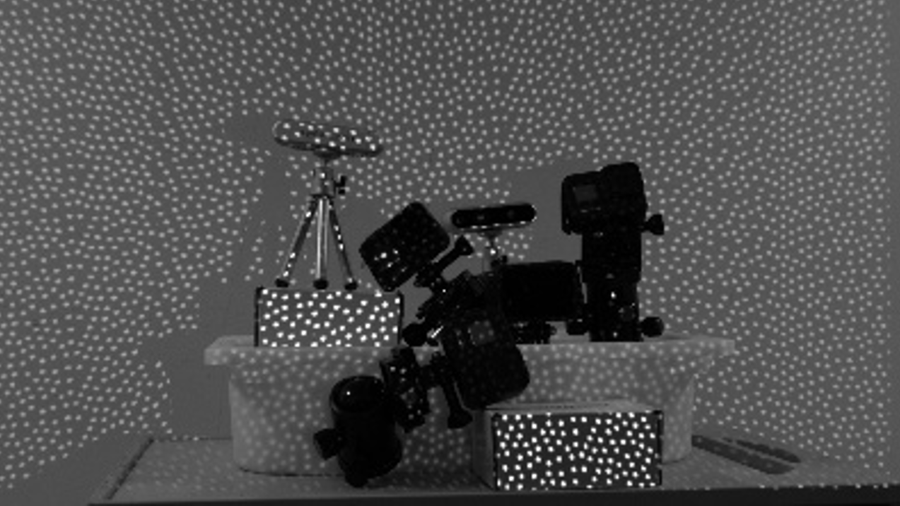
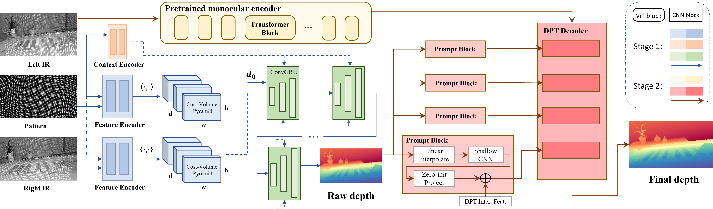

Drag slider to compare: Left = Pixel Matching, Right = Ours
We argue that single-shot structured light decoding should be performed in the Neural Feature Domain rather than the fragile Pixel Domain.
Traditional intensity-based matching fails easily with noise and surfaces not covered by projected pattern. Our method constructs cost volumes from deep features, producing significantly denser and more robust depth maps.
Real-world data is not required. Training on high-fidelity synthetic data is sufficient for strong Sim2Real generalization.
Physically plausible and fully randomized synthetic data is all you need.

Patterns inevitably fail in challenging areas (e.g., occlusion, specularities). We aggressively leverage Image Priors to repair these defects.
Using the initial depth from neural matching as a prompt, we fine-tune Depth Anything V2 to recover fine details and complete geometry that structured light alone cannot capture.

RGB

IR
Ours
Traditional






We consider the problem of active 3D imaging using single-shot structured light systems. Traditional structured light methods typically decode depth correspondences through pixel-domain matching algorithms, resulting in limited robustness under challenging scenarios like occlusions, fine-structured details, and non-Lambertian surfaces.
Inspired by recent advances in neural feature matching, we propose a learning-based structured light decoding framework that performs robust correspondence matching within feature space rather than the fragile pixel domain. Our method extracts neural features from the projected patterns and captured infrared (IR) images, explicitly incorporating their geometric priors by building cost volumes in feature space.
To further enhance depth quality, we introduce a depth refinement module that leverages strong priors from large-scale monocular depth estimation models. Experiments demonstrate that our method, trained exclusively on synthetic data, generalizes well to real-world indoor environments and outperforms commercial systems.

The pipeline of NSL. Given a single or stereo pair of IR images and a projected pattern, NSL first estimates an initial raw depth map via the Neural Feature Matching module (left path). Next, the Monocular Depth Refinement module incorporates priors from a monocular depth estimation model, using the initial depth as a prompt (right path), generating a final depth map with enhanced structural detail.
@inproceedings{li2025nsl,
title = {Robust Single-shot Structured Light 3D Imaging via Neural Feature Decoding},
author = {Jiaheng Li, Qiyu Dai, Lihan Li, Praneeth Chakravarthula, He Sun, Baoquan Chen and Wenzheng Chen},
booktitle = {SIGGRAPH Asia 2025 Conference Papers},
year = {2025},
publisher = {ACM}
}